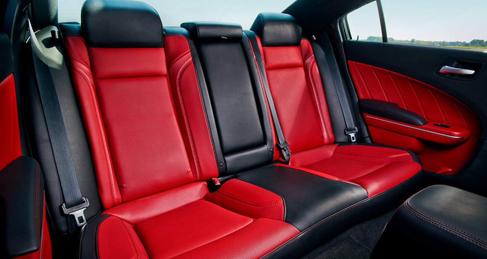

The Dodge Charger is my favorite out of all of the cars.
The Charger seats five people and has great luscious leg room for the people in the back seats.

The Charger is a secan but still manages to look great and gets looks by strangers, due to it not being a very common car. The Charger is great for driving friends and family around or to home due to its amazing seat room. The Charger's body is really nice and smooth and the tail lights also look really amazing.
The Charger is the one that I'm most interested because it seats manny and sill looks amazing. The other two still do look amazing but they dont have crowded leg room in the back, and for me thats a huge problem. They all range in prices from the Mustang at 20-30 grand making it the most expensive and the other two at 10-15 grand. That's the beauty of the Charger its cheaper and seats five with luscious leg room. For me the best car out of all three is the Dodge Charger.